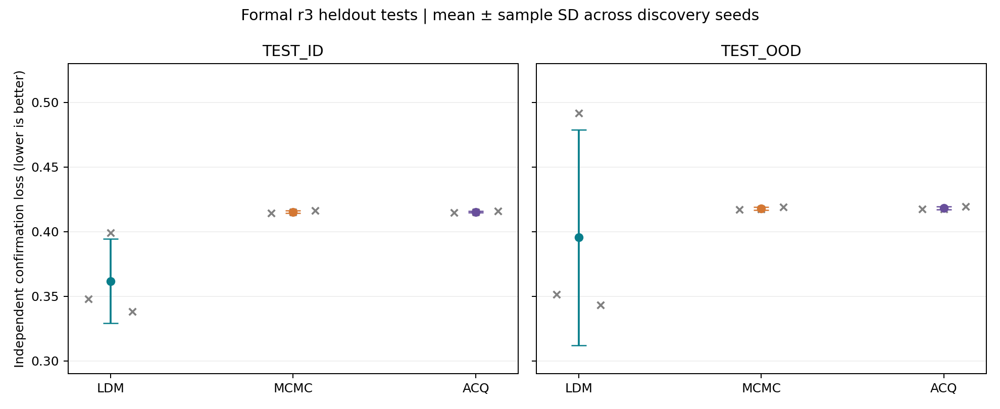
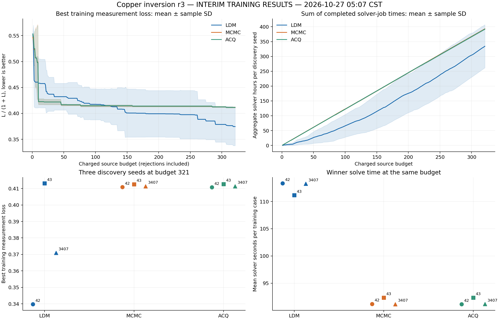
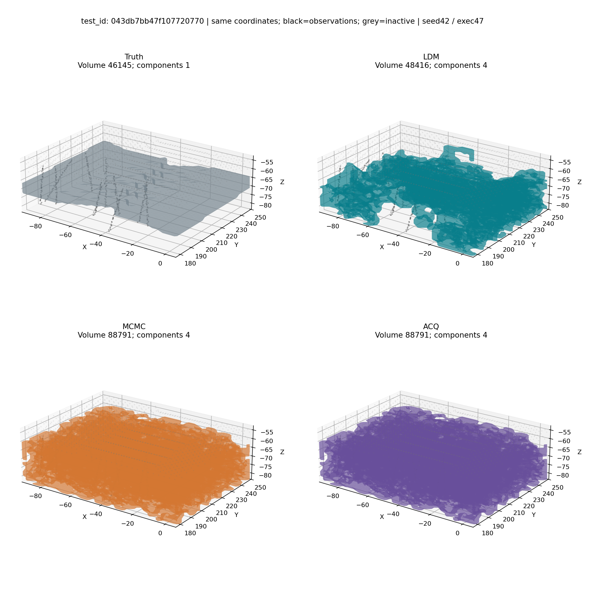
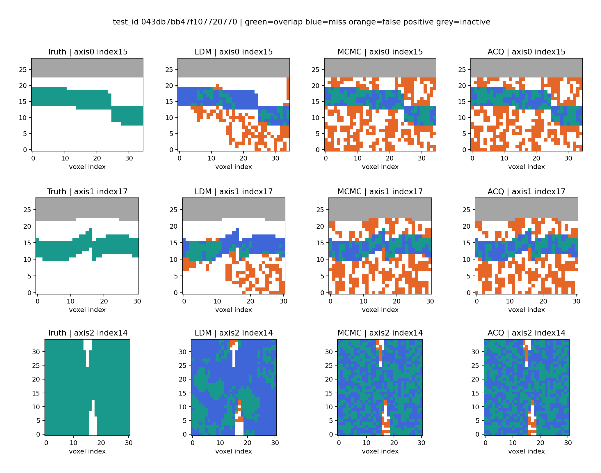
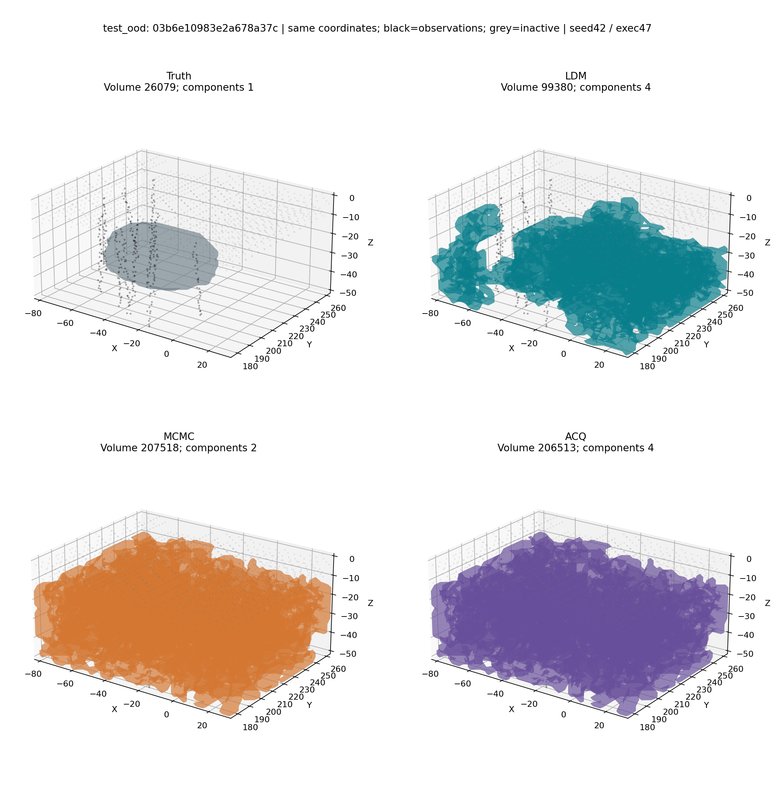
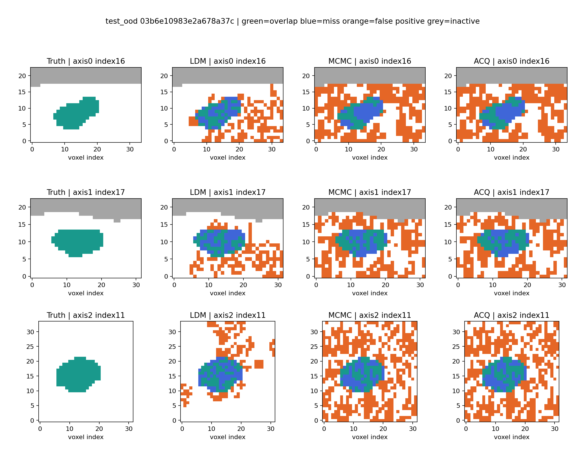

九组训练、私有验证选型和固定赢家 ID/OOD 测试已完成。LDM在三个发现种子的ID测试中均降低独立测量损失，但OOD优势不稳定，且求解约慢24%。
范围：仅 copper-measurement-study-20261025-r3。旧r1/r2及开发验收不参与科学结果比较。报告日期：2026-10-27。数据、源码摘要、全部案例指标与成本附件均保留，以下未知成本不按零处理。
主指标是每次求解独立确认测量损失 L/(1+L)，先在父体内平均，再对父体等权。IoU是辅助几何指标。表中均值±样本标准差跨发现种子42/43/3407，不是置信区间。三个执行种子47/48/49与发现种子分开记录。
每组最多321个唯一收费源码，接口拒绝占预算且不补评。训练48案例、验证16案例；验证在三个冻结候选中选型；赢家固定后测试ID32案例×3执行种子、OOD16案例×3执行种子。全部组先封存、全部组完成选型，之后才进行测试。相同单候选上限120秒、2CPU、4GiB；非活动区、体积2%–65%与最多4连通体约束一致。相同上限不意味着相同实际耗时。
| 方法 | ID损失 | OOD损失 | ID/OOD IoU | ID/OOD求解秒 |
|---|---|---|---|---|
| LDM | 0.361726 ± 0.032651 | 0.395486 ± 0.083478 | 0.1857 / 0.1977 | 112.56 / 112.55 |
| MCMC | 0.415236 ± 0.000979 | 0.417936 ± 0.001172 | 0.1064 / 0.0857 | 91.06 / 91.09 |
| ACQ | 0.415201 ± 0.000595 | 0.418215 ± 0.001086 | 0.1064 / 0.0857 | 91.06 / 91.12 |
LDM42与3407在OOD仍领先，而LDM43的OOD损失0.491752劣于同种子基线。LDM平均OOD损失更低不能解释为每次运行都具有跨分布优势。全部测试合法率100%、失败求解0；这说明本批固定赢家执行成功，不抹除训练阶段的收费拒绝和基础设施故障。

九组收费源并集均为321，对账通过。私有结果数可以少于321，差额由收费拒绝解释，不强补。LDM42为308私有完成结果+13本地研究拒绝；LDM43为319+2。其余差集详见预算对账JSON。所有已收费源码原字节保留。
| 组 | 验证损失 | ID损失 | OOD损失 | 固定赢家SHA256前缀 |
|---|---|---|---|---|
| acq-3407 | 0.413766 | 0.415825 | 0.419470 | 9bab628bb702d5f8 |
| acq-42 | 0.408219 | 0.414641 | 0.417607 | 41fe749985e14bde |
| acq-43 | 0.408209 | 0.415136 | 0.417569 | b9dff5158882b7d5 |
| ldm-3407 | 0.378937 | 0.338327 | 0.343087 | 97b1cf05e0ae68d5 |
| ldm-42 | 0.364064 | 0.347823 | 0.351618 | 2d2c33ed6a588d9e |
| ldm-43 | 0.453302 | 0.399027 | 0.491752 | e25dbedd2ef69523 |
| mcmc-3407 | 0.413689 | 0.416260 | 0.419255 | a453bad3a5ee4d39 |
| mcmc-42 | 0.407763 | 0.414310 | 0.417014 | dd55f69c573084f0 |
| mcmc-43 | 0.408209 | 0.415136 | 0.417539 | f8742ab62205709c |
训练原序共同完整前缀321：LDM0.374606±0.036835、MCMC0.411590±0.000895、ACQ0.411598±0.000993。训练最佳与验证选定赢家可能不同，不能把两者视为同一候选的轨迹。完整赢家摘要和验证候选结果见formal-completion.json。

解释来自冻结赢家源码；未用测试结果继续改动算法。九份原字节源码位于sources/，完整摘要见winner-source-hashes.json。
| 方法 | 实际策略与限制 |
|---|---|
| LDM42 | 观测驱动排序和初始化、物理尺度球形提议、模拟退火及最佳合法场保留。CFG选择anneal/sphere；不把未启用的portfolio等分支算作实际算法。搜索约用94%剩余预算。 |
| LDM43 | Voronoi初始化，按CFG阶段计划进行合法边界搜索，每阶段只在改进时更新最佳场，最终canonicalize。公开观测目标的优化未保证本种子的OOD收益。 |
| LDM3407 | 中心加权随机傅里叶特征、多长度尺度集成、分位阈值搜索和合法投影，随后局部球形边界修改。stage_a=0，因此特征权重扰动阶段未启用。 |
| MCMC | 基线包高斯随机场提议、速度扩展和水平集更新，按平方损失差进行随机接受，保留最佳合法状态。这是适配物理单位及约束的MCMC-v2，不是原论文逐字复现。 |
| ACQ | 与MCMC相同提议族；warmup后用在线Bayesian ridge预测损失和不确定性，以mu-beta*sigma挑选候选，再实际评分和接受。结果接近MCMC，不能仅凭算法名宣称加速。 |
基线软搜索截止约为剩余预算75%，LDM通常约94%–95%，所以同120秒上限下实际时间仍不同。LDM优势不是神经网络直接输出真值：这些赢家本身是数值初始化、随机搜索和合法性修复程序。
all-test-cases.csv包含1296次固定赢家求解，涵盖父体、案例、执行种子、独立确认损失、观测拟合、IoU、相对体积误差、连通体数及时间。execution-seed-stability.json提供54个组×split×执行种子的父体等权损失。不得把发现种子标准差和执行种子变化混合。
以下统一选择各split中字典序最小case_id，发现种子固定42、执行种子固定47；规则不依赖指标。3D的原点、网格间距、坐标范围及视角一致，黑点为公开观测、灰点为非活动区域，标题列出体积和连通体数。坐标单位依数据集定义，不擅自标为米。三正交切片取各轴中间体素；绿为重叠、蓝为漏检、橙为误检、灰为非活动区。
| 组 | 分布 | 执行47损失 | 执行48损失 | 执行49损失 |
|---|---|---|---|---|
| acq-3407 | test_id | 0.411634 | 0.409834 | 0.426007 |
| acq-3407 | test_ood | 0.414067 | 0.416127 | 0.428214 |
| acq-42 | test_id | 0.409904 | 0.404331 | 0.429688 |
| acq-42 | test_ood | 0.426877 | 0.407083 | 0.418862 |
| acq-43 | test_id | 0.414440 | 0.410938 | 0.420030 |
| acq-43 | test_ood | 0.416208 | 0.411100 | 0.425400 |
| ldm-3407 | test_id | 0.342519 | 0.331948 | 0.340512 |
| ldm-3407 | test_ood | 0.335962 | 0.347693 | 0.345607 |
| ldm-42 | test_id | 0.340253 | 0.364165 | 0.339052 |
| ldm-42 | test_ood | 0.348935 | 0.359597 | 0.346323 |
| ldm-43 | test_id | 0.397830 | 0.399672 | 0.399579 |
| ldm-43 | test_ood | 0.492640 | 0.493548 | 0.489070 |
| mcmc-3407 | test_id | 0.411761 | 0.410086 | 0.426935 |
| mcmc-3407 | test_ood | 0.414224 | 0.416155 | 0.427385 |
| mcmc-42 | test_id | 0.410085 | 0.404367 | 0.428478 |
| mcmc-42 | test_ood | 0.426362 | 0.407045 | 0.417633 |
| mcmc-43 | test_id | 0.414440 | 0.410938 | 0.420030 |
| mcmc-43 | test_ood | 0.416208 | 0.411100 | 0.425310 |




观测稀疏导致反演非唯一。更好的测量拟合不等于准确恢复真实几何，固定案例也不代表总体表现。这里是合成基准，尚不能外推为真实矿区勘探效果。
以下“小时”是各作业墙钟之和，不是整场实验历时，也不是CPU小时。并发等待之和不能直接加到运行时间上推算交付时间。CPU through-reap记录和接口/评分分项均在JSON附件中；研究时钟与API、接口可能存在嵌套，不将它们相加为无重叠总额。
| 组 | 研究时钟h | 研究接口h | 训练私有接口h | 训练求解h | 训练评分h | LLM请求计数 |
|---|---|---|---|---|---|---|
| acq-3407 | 0.00 | 2.84 | 2.85 | 392.42 | 5.89 | 0 |
| acq-42 | 0.00 | 2.88 | 2.89 | 393.64 | 5.91 | 0 |
| acq-43 | 0.00 | 2.85 | 2.84 | 390.06 | 5.90 | 0 |
| ldm-3407 | 6.24 | 2.59 | 1.31 | 250.51 | 5.73 | 1395 |
| ldm-42 | 6.20 | 2.47 | 1.12 | 371.73 | 5.21 | 1453 |
| ldm-43 | 6.79 | 4.42 | 2.24 | 380.52 | 5.16 | 1320 |
| mcmc-3407 | 0.00 | 2.85 | 2.88 | 393.72 | 5.95 | 0 |
| mcmc-42 | 0.00 | 2.86 | 2.85 | 391.25 | 5.95 | 0 |
| mcmc-43 | 0.00 | 2.85 | 2.86 | 393.75 | 6.00 | 0 |
| 组 | 阶段 | 接口h | 求解h | 评分h | CPU h |
|---|---|---|---|---|---|
| acq-3407 | validation | 0.023 | 1.214 | 0.009 | 1.234 |
| acq-3407 | test | 0.015 | 3.644 | 0.027 | 3.655 |
| acq-42 | validation | 0.023 | 1.214 | 0.009 | 1.233 |
| acq-42 | test | 0.015 | 3.642 | 0.028 | 3.653 |
| acq-43 | validation | 0.023 | 1.214 | 0.009 | 1.233 |
| acq-43 | test | 0.015 | 3.643 | 0.028 | 3.654 |
| ldm-3407 | validation | 0.026 | 1.510 | 0.009 | 1.532 |
| ldm-3407 | test | 0.017 | 4.529 | 0.027 | 4.542 |
| ldm-42 | validation | 0.006 | 1.511 | 0.009 | 1.514 |
| ldm-42 | test | 0.004 | 4.532 | 0.027 | 4.532 |
| ldm-43 | validation | 0.019 | 1.464 | 0.009 | 1.479 |
| ldm-43 | test | 0.017 | 4.446 | 0.027 | 4.458 |
| mcmc-3407 | validation | 0.023 | 1.214 | 0.009 | 1.233 |
| mcmc-3407 | test | 0.015 | 3.643 | 0.028 | 3.654 |
| mcmc-42 | validation | 0.023 | 1.214 | 0.009 | 1.233 |
| mcmc-42 | test | 0.015 | 3.642 | 0.028 | 3.653 |
| mcmc-43 | validation | 0.023 | 1.214 | 0.009 | 1.233 |
| mcmc-43 | test | 0.015 | 3.644 | 0.027 | 3.655 |
验证与测试共3726容器作业：270接口、1728求解、1728评分；零失败，资源字段完整。完成标记的5454收据另含1728案例级收据，不能当作额外容器执行重复统计。
| 组 | 研究等待h | 训练等待h | 验证测试等待h |
|---|---|---|---|
| acq-3407 | 4.29 | 1504.30 | 0.57 |
| acq-42 | 3.87 | 1494.19 | 0.67 |
| acq-43 | 2.92 | 1414.80 | 0.65 |
| ldm-3407 | 3.56 | 1420.69 | 0.66 |
| ldm-42 | 2.19 | 1349.04 | 0.75 |
| ldm-43 | 2.71 | 1395.75 | 0.73 |
| mcmc-3407 | 3.54 | 1474.16 | 0.62 |
| mcmc-42 | 2.69 | 1460.09 | 0.63 |
| mcmc-43 | 1.76 | 1411.23 | 0.60 |
等待来自jobs/scheduling记录；中断且未返回收据的作业可能没有此记录，所以属于已记录等待而非严格全量墙钟恢复成本。API只对每个响应最后一份usage求和，避免流式重复计数。
| 组 | 响应数 | 缺usage | 输入tokens | 缓存输入tokens | 输出tokens |
|---|---|---|---|---|---|
| ldm-3407 | 1383 | 8 | 135013276 | 130429568 | 2086883 |
| ldm-42 | 1443 | 3 | 154573269 | 149270269 | 2286223 |
| ldm-43 | 1310 | 6 | 124619091 | 120648704 | 1921994 |
请求计数与响应文件数不完全相同。缺失usage的3/6/8份响应分别属于LDM42/43/3407，未推定为免费；没有供应商账单，不能给出完整货币成本。
六基线最初各129个收费源码保留旧模板，后续未收费源码按冻结映射使用signal-cleanup修复。修复包括六接口并行、有界宿主验证等待从研究时钟扣除、SIGALRM嵌套finally清理。已收费失败不退款、不替换候选。历史资源调度由128/96等验收路径收敛至64总作业（56求解评分+8接口）、startup1、每进程32；“80%CPU”是目标，稳定性优先。
| 时间（CST） | 事故/恢复及成本披露 |
|---|---|
| 10-26 00:21起 | Docker启动控制故障；36未完成作业按证据协调，未重启共享Docker。128控制压测有2接口超时，后续降并发。 |
| 10-26 03:44—约06:03 | 固定7200秒socket在评分仍推进时超时。改为短submit/status及完成计数进展监控。96联合验收5接口超时失败，64联合1308作业零失败才恢复。约2小时19分钟为故障到恢复日历区间，不是所有工作完全停止的精确时间。 |
| 10-27约00:57—04:10 | LDM43研究turn计数触100。证明3个round5输入是metrics键序列化别名，保留全部原usage和budget-before，仅校正唯一计数至97；合法round20预留不退款。持久化exact输入、回归和摘要固定后单次接管，100/321上限不变。约3小时13分钟为诊断恢复区间。 |
| 10-27 05:06—07:06检查 | 九组训练对账、封存后验证选型和固定赢家测试完成；研究不再运行。测试数据已揭示，不能重新称作未见评估或反馈研究。 |
下表为OPS中已定位的主要small/load验收目录，包含失败运行和未完成早期load；独立通过不能替代联合通过。它们是工程成本，不属于科学训练收益，且不能宣称覆盖全部开发劳动、测试进程或每个私有开发闭环。
| 验收目录 | 容器数 | 失败数 | 墙钟合计h | CPU h |
|---|---|---|---|---|
| async-joint-load-20261026 | 1308 | 5 | 22.679 | 22.464 |
| async-joint64-load-20261026 | 1308 | 0 | 22.572 | 22.411 |
| async-joint64-small-20261026 | 12 | 0 | 0.015 | 0.014 |
| async-load-full-20261026 | 1308 | 0 | 22.665 | 22.467 |
| load-control-20261026 | 1308 | 2 | 22.655 | 22.443 |
| load-control96-20261026 | 1308 | 0 | 22.679 | 22.467 |
| load-full | 370 | 0 | 7.752 | 7.638 |
| load-full-v2 | 1308 | 0 | 22.884 | 22.463 |
| load-small | 12 | 0 | 0.017 | 0.014 |
| load-small-v2 | 12 | 0 | 0.017 | 0.014 |
恢复人工/代理调试时长、部分无收据中断及未定位开发作业的完整成本不可由现存汇总无歧义重建；明确列为未完全量化，而非零。完整时序和证据文件名见资格记录及report-delivery文档。总成本结论仅限可观测分项，不给出虚假的精确全包成本。
全部赢家源码：acq-3407 · acq-42 · acq-43 · ldm-3407 · ldm-42 · ldm-43 · mcmc-3407 · mcmc-42 · mcmc-43